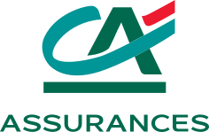
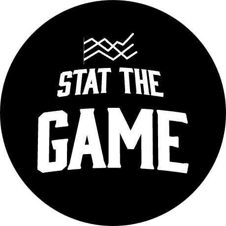
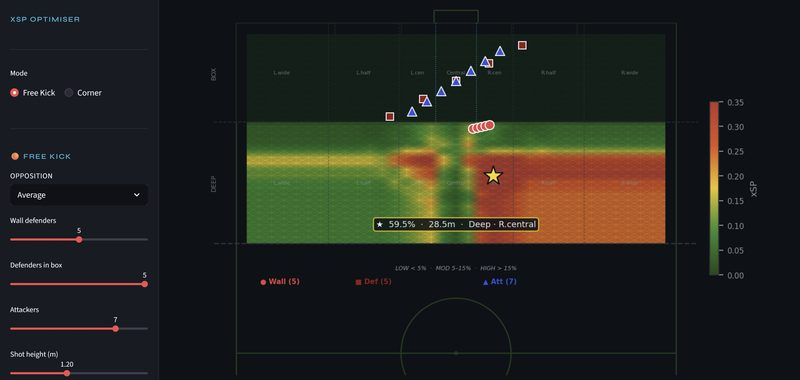
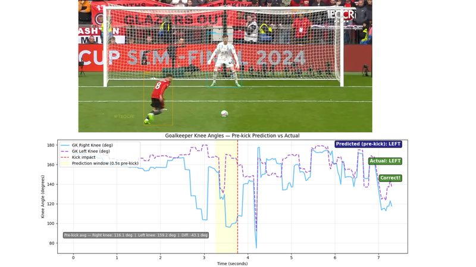
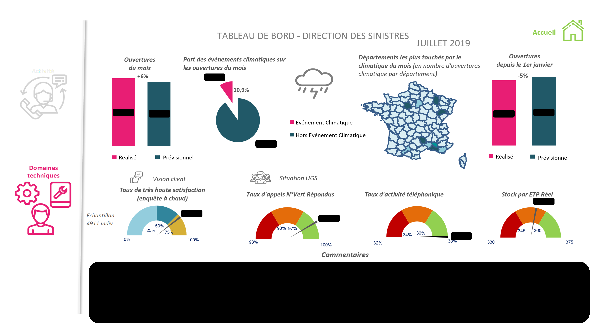
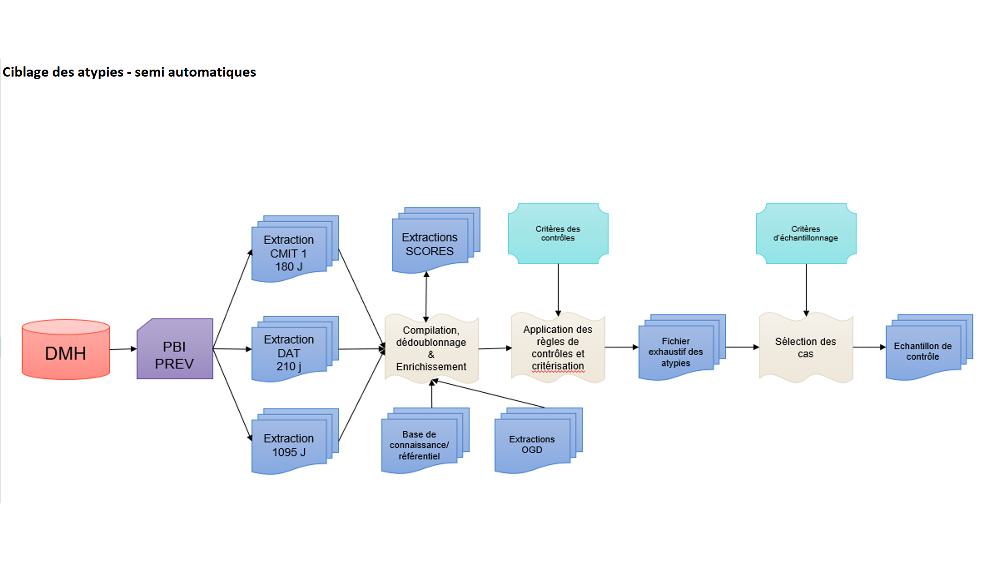

Data Analyst
Les entreprises m'appellent pour améliorer leurs prises de décisions avec l'aide de la data.


Data Analyst expérimenté, j'interviens dans les secteurs assurantiel, bancaire et sportif avec une approche résolument orientée métier.
Je mobilise mes compétences techniques — SAS, Python, SQL, Power BI, … — pour collecter et préparer la donnée, concevoir des indicateurs à forte valeur ajoutée et livrer des tableaux de bord qui aident concrètement les équipes à prendre de meilleures décisions.
De la collecte brute à la décision éclairée, je couvre toute la chaîne de la donnée.
Collecte et ingestion de données depuis des sources variées — APIs, bases de données, fichiers bruts.
Nettoyage, transformation et structuration des données pour garantir leur fiabilité avant toute analyse.
Analyse statistique et exploration des données pour identifier des tendances actionnables et appuyer la prise de décision métier.
Industrialisation des processus reporting et conception de dashboards clairs et stratégiques pour les équipes métier.
Des livrables concrets avec des résultats mesurables.

Voir le projet →Modèle de machine learning permettant de déterminer la probabilité qu'un coup franc direct se convertisse en but. Basé sur les données StatBomb, le modèle prend en compte la position, la distance, la configuration défensive et le nombre d'attaquants pour générer un score XSP actionnable. Ce projet permet au staff technique d'améliorer les patterns sur coups francs et aux football analysts d'intégrer cette nouvelle métrique dans leur analyse.

Projet de computer vision analysant les tirs au but. Le modèle détecte les joueurs par leur forme et leur couleur de maillot, puis extrait des données biomécaniques (angle du genou) permettant de prédire la direction du tir avant que la frappe ait lieu.

Refonte complète du tableau de bord de la Direction des Sinistres. Ce projet a permis de répondre aux besoins métiers, d'intégrer rapidement les évolutions projet, d'offrir une meilleure flexibilité grâce à des filtres avancés et d'accélérer la production du reporting.

Solution permettant aux équipes métier de détecter plus rapidement et efficacement des atypies. En un clic, le processus compile plusieurs sources, nettoie les données, applique les critères de contrôle et restitue une synthèse des dossiers suspects avec les montants associés.
Projet à venir
Vous avez un projet data, un besoin BI ou une mission freelance ?
Je suis disponible et réponds sous 24h.